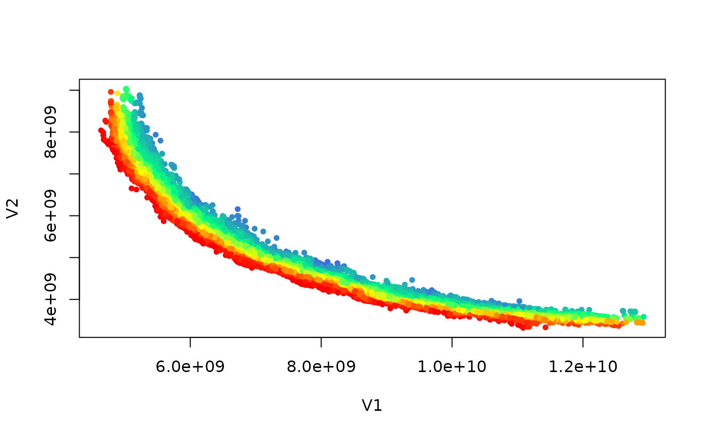

Identify, remove and rank dominated points according to Pareto optimality
Source:R/nondominated.R
nondominated.RdIdentify nondominated points with is_nondominated() and remove dominated
ones with filter_dominated().
any_dominated() quickly detects if a set contains any dominated point.
pareto_rank() ranks points according to Pareto-optimality,
which is also called nondominated sorting (Deb et al. 2002)
.
Usage
is_nondominated(x, maximise = FALSE, keep_weakly = FALSE)
filter_dominated(x, maximise = FALSE, keep_weakly = FALSE)
any_dominated(x, maximise = FALSE, keep_weakly = FALSE)
pareto_rank(x, maximise = FALSE)Arguments
- x
matrix()|data.frame()
Matrix or data frame of numerical values, where each row gives the coordinates of a point.- maximise
logical()
Whether the objectives must be maximised instead of minimised. Either a single logical value that applies to all objectives or a vector of logical values, with one value per objective.- keep_weakly
logical(1)
IfFALSE, returnFALSEfor any duplicates of nondominated points, except the last one.
Value
is_nondominated() returns a logical vector of the same length
as the number of rows of data, where TRUE means that the
point is not dominated by any other point.
filter_dominated() returns a matrix or data.frame with only mutually nondominated points.
any_dominated() returns TRUE if x contains any (weakly-)dominated points, FALSE otherwise.
pareto_rank() returns an integer vector of the same length as
the number of rows of data, where each value gives the rank of each
point.
Details
Given \(n\) points of dimension \(m\), the current implementation uses the well-known \(O(n \log n)\) dimension-sweep algorithm (Kung et al. 1975) for \(m \leq 3\) and the naive \(O(m n^2)\) algorithm for \(m \geq 4\). The best-known \(O(n(\log_2 n)^{m-2})\) algorithm for \(m \geq 4\) (Kung et al. 1975) is not implemented yet.
pareto_rank() is meant to be used like rank(), but it assigns
ranks according to Pareto dominance, where rank 1 indicates those
solutions not dominated by any other solution in the input set.
Duplicated points are kept on the same front. The resulting ranking can be
used to partition points into a list of matrices, each matrix representing
a nondominated front (see examples below)
More formally, given a finite set of points \(X \subset \mathbb{R}^m\), the rank of a point \(x \in X\) is defined as:
$$\operatorname{rank}(x) = r \iff x \in F^c_{r} \land \nexists y \in F^c_{r}, y \prec x$$
where \(y \prec x\) means that \(y\) dominates \(x\) according to Pareto optimality, \(F^c_r = X \setminus \bigcup_{i=1}^{r-1} F_i\) and \(F_r = \{x \in X \land \operatorname{rank}(x) = r\}\). The sets \(F_c\), with \(c=1,\dots,k\), partition \(X\) into \(k\) fronts, that is, mutually nondominated subsets of \(X\).
Let \(m\) be the number of dimensions. With \(m=2\), i.e.,
ncol(data)=2, the code uses the \(O(n \log n)\) algorithm by
Jensen (2003)
. When \(m=3\), it uses a \(O(k\cdot n \log n)\)
algorithm, where \(k\) is the number of fronts in the output. With
higher dimensions, it uses the naive \(O(k m n^2)\) algorithm.
References
Kalyanmoy Deb, A Pratap, S Agarwal, T Meyarivan (2002).
“A fast and elitist multi-objective genetic algorithm: NSGA-II.”
IEEE Transactions on Evolutionary Computation, 6(2), 182–197.
doi:10.1109/4235.996017
.
M
T Jensen (2003).
“Reducing the run-time complexity of multiobjective EAs: The NSGA-II and other algorithms.”
IEEE Transactions on Evolutionary Computation, 7(5), 503–515.
H
T Kung, F Luccio, F
P Preparata (1975).
“On Finding the Maxima of a Set of Vectors.”
Journal of the ACM, 22(4), 469–476.
doi:10.1145/321906.321910
.
Examples
S = matrix(c(1,1,0,1,1,0,1,0), ncol = 2, byrow = TRUE)
is_nondominated(S)
#> [1] FALSE TRUE TRUE FALSE
is_nondominated(S, maximise = TRUE)
#> [1] TRUE FALSE FALSE FALSE
filter_dominated(S)
#> [,1] [,2]
#> [1,] 0 1
#> [2,] 1 0
filter_dominated(S, keep_weakly = TRUE)
#> [,1] [,2]
#> [1,] 0 1
#> [2,] 1 0
#> [3,] 1 0
any_dominated(S)
#> [1] TRUE
any_dominated(S, keep_weakly = TRUE)
#> [1] TRUE
any_dominated(filter_dominated(S))
#> [1] FALSE
three_fronts = matrix(c(1, 2, 3,
3, 1, 2,
2, 3, 1,
10, 20, 30,
30, 10, 20,
20, 30, 10,
100, 200, 300,
300, 100, 200,
200, 300, 100), ncol=3, byrow=TRUE)
pareto_rank(three_fronts)
#> [1] 1 1 1 2 2 2 3 3 3
split.data.frame(three_fronts, pareto_rank(three_fronts))
#> $`1`
#> [,1] [,2] [,3]
#> [1,] 1 2 3
#> [2,] 3 1 2
#> [3,] 2 3 1
#>
#> $`2`
#> [,1] [,2] [,3]
#> [1,] 10 20 30
#> [2,] 30 10 20
#> [3,] 20 30 10
#>
#> $`3`
#> [,1] [,2] [,3]
#> [1,] 100 200 300
#> [2,] 300 100 200
#> [3,] 200 300 100
#>
path_A1 <- file.path(system.file(package="moocore"),"extdata","ALG_1_dat.xz")
set <- read_datasets(path_A1)[,1:2]
is_nondom <- is_nondominated(set)
cat("There are ", sum(is_nondom), " nondominated points\n")
#> There are 583 nondominated points
if (requireNamespace("graphics", quietly = TRUE)) {
plot(set, col = "blue", type = "p", pch = 20)
ndset <- filter_dominated(set)
points(ndset[order(ndset[,1]),], col = "red", pch = 21)
}
ranks <- pareto_rank(set)
str(ranks)
#> int [1:23260] 13 24 20 22 22 5 23 5 16 20 ...
if (requireNamespace("graphics", quietly = TRUE)) {
colors <- colorRampPalette(c("red","yellow","springgreen","royalblue"))(max(ranks))
plot(set, col = colors[ranks], type = "p", pch = 20)
}
